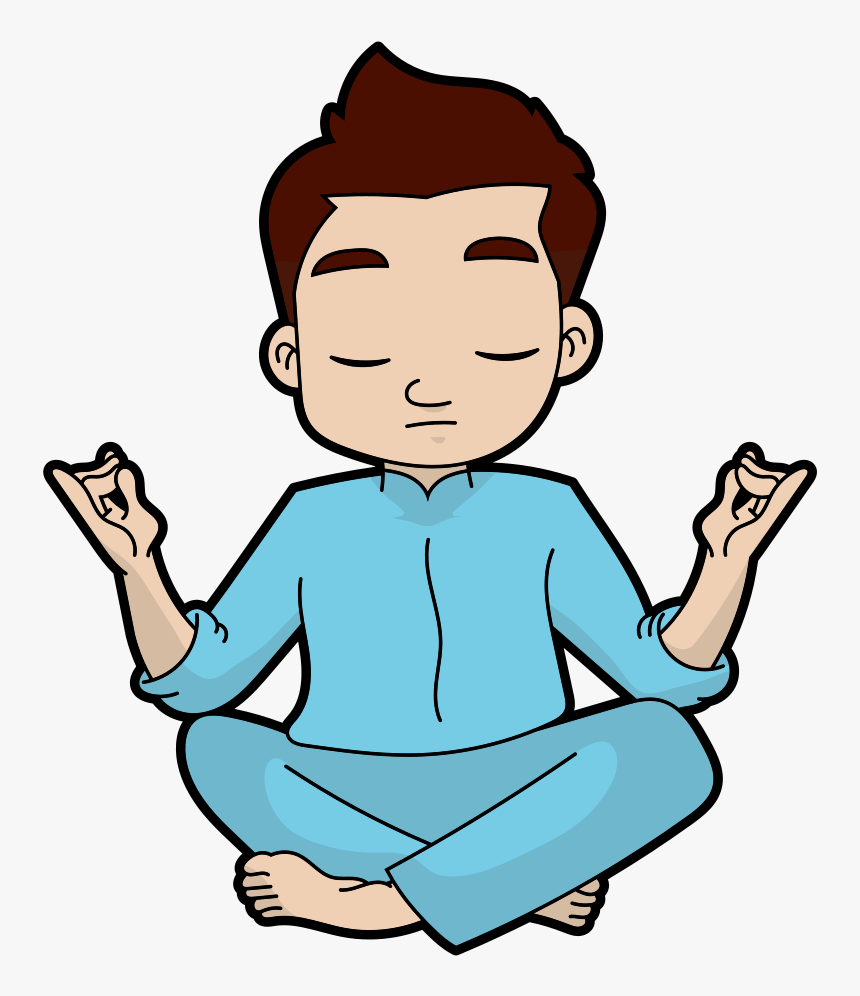

Breath is the deepest, most autonomous function in the body, controlled from within the nervous system (including the brain) without any deliberate effort. It is the basis of energy flow in the body and therefore the basis of every activity, consciously or unconsciously undertaken, including the activity of thinking and feeling. Accordingly, to force oneself to become conscious of how one is breathing is necessarily to get down below any activity or pre-occupation that you may be engaged in. This is why when someone is over excited, even panicking, we urge them to take slow deep breaths, so that they slowly recover composure. This recovery is effectively a distraction from whatever was provoking the excitement or panic. It is also considered good practice to take long slow controlled breaths for a few moments before settling into sleep – again for the same reason that doing so helps you to forget the day’s business. In summary then, breath control is a form of deep re-orientation of stilling the mind, clearing it so one can focus on something else. Washing, bathing, as in wudu and ghusl, serves the same purpose. Praise of God likewise is the proper preparation for supplicating to Him: this is the principal division in the fathah.For any technique or any competence that a Muslim needs in order to lead a full, healthy, intellectually and spiritually interesting life, he has the right (in some circumstances it is an obligation), to learn that technique or competence from whoever has it: this applies whether the expert happens to be a Muslim or non-Muslim, male or female, young or old. The issue that arises is how far, if at all, it is possible to adopt or assimilate a technique well enough to be independently expert in it, without unwittingly adopting or assimilating the concepts and principles embedded in that technique. How do we decide? For urgent matters of life and death or severe business, the urgency decides. When the urgency has passed, the same question comes again. Can a Muslim learn and own the technique or competence that saved a life or rescued someone from extreme suffering? The answer usually is yes; but the question must be asked, the technique and the knowledge behind it must be questioned before they are accepted and owned as a regular part of Muslim life. As for meditation techniques, they are nearly always attached to some sort of religious tradition. In secular modern times the religious aspects of these techniques are not publicly expressed while the techniques are being taught at beginner and intermediate levels. Most people have no desire or intention to proceed beyond those levels. It is up to individual Muslim to protect him or herself from drifting into ways of thinking about God and the obligations of the religion which are forbidden or strongly rebuked in Islam.
Breath Control
created 04/03/2021
Comments (3)
